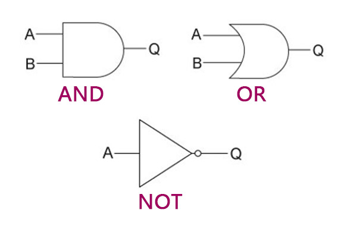
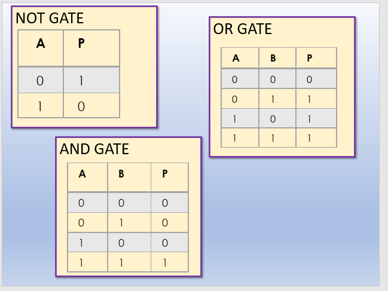
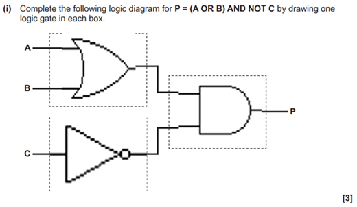

2.4 Boolean Logic
Here you will revise the following:
- Logic Gates (AND, OR, NOT, XOR, NAND, NOR)
- Truth Tables
- Logic Diagrams
Logic Gates
Logic gates are fundamental building blocks of digital circuits. They perform basic logical operations on one or more binary inputs (0 or 1) and produce a single binary output.
AND Gate
AND Gate: Outputs 1 only if all inputs are 1.

OR Gate
OR Gate: Outputs 1 if at least one input is 1.

NOT Gate
NOT Gate: Outputs the inverse of the single input (0 if input is 1, 1 if input is 0).

XOR (Exclusive OR) Gate
XOR Gate: Outputs 1 if the inputs are different.

NAND (NOT AND) Gate
NAND Gate: Outputs the inverse of an AND gate (Outputs 0 only if all inputs are 1).

NOR (NOT OR) Gate
NOR Gate: Outputs 1 only if all inputs are 0.

It's your turn!
Which logic gate outputs 1 only when both of its inputs are 0?
Truth Tables
Truth Table: A table that shows all possible input combinations for a logic circuit or gate and the corresponding output.
Truth tables are used to define the function of a logic gate or to analyze the output of a combination of gates.
Example Truth Table for an AND gate with inputs A and B:
A | B | Output
--|---|-------
0 | 0 | 0
0 | 1 | 0
1 | 0 | 0
1 | 1 | 1
Logic Diagrams
Logic Diagram: A graphical representation of a logic circuit using standard symbols for logic gates.
Logic diagrams show how logic gates are connected together to perform more complex logical operations.
It's your turn!
Draw a logic diagram for the Boolean expression A OR (B AND C).